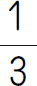
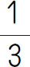

在加减乘除的计算中，故意将算式中的数字或符号设计为错误的，这样导致计算结果发生错误，需要利用错误的答案求出正确的结论，这就是错中求解问题．这是还原问题的一种常见的应用．它实质检查的是学生对于加减乘除各算式内部各量关系的把握程度．
【解题技巧】
解答这类应用题，往往要采用倒推还原的方法，从错误的结果入手，分析错误的原因，最后利用和差的变化规律求出加数或被减数、减数，利用积和商的变化规律求出因数或被除数、除数．
加，减，乘，除各算式内部各量的变化关系如下．
1．加法：加法部分与和的变化方向是一样的，加数怎么变，和就怎么变．
2．减法：被减数与差的变化方向相同，被减数增大或减少，差也会随之增大或减少．减数与差的变化方向相反，减数增大或减少，差反而减少或增大．
3．乘法：因数部分与积的变化方向相同，因数扩大或缩小，积随之扩大或缩小．
4．除法：被除数与商的变化方向相同，被除数扩大或缩小，商也随之扩大或缩小.除数与商的变化方向相反，除数扩大或缩小，商反而缩小或扩大．
（第十二届“希望杯”初赛）一个小数，若去掉小数点，则得到的整数与原小数的和是201.3，那么这个小数是_____．
【答案】 18.3．
【解析】 设原数为a ，若a 是一位小数，则去掉小数点后得到的数为10a ，a ＋10a ＝201.3，a ＝18.3．若a 是两位小数，去掉小数点变为100a ，a ＋100a ＝201.3，无解．同理可知a 也不能是三位小数，只有18.3一个．
【举一反三1】
有一个自然数，它的最小的两个约数的差是4，最大的两个约数的差是308，则这个自然数是_____．
（第八届“希望杯”决赛）停车场上停有一些轿车和卡车，轿车辆数是卡车辆数的3.5倍，过了一会儿，3辆轿车开走了，又开来了6辆卡车，这时停车场轿车的辆数是卡车辆数的2.3倍，那么，停车场原来停有（ ）辆车．
【答案】 63．
【解析】 设原来卡车有x 辆，那么轿车有3.5x 辆．由题意可列出方程3.5x -3＝（x ＋6）×2.3，解得x ＝14．所以，原来共有14×4.5＝63（辆）．
【举一反三2】
有若干个苹果和梨，苹果的个数是梨的个数的2倍．如果每天吃2个梨和6个苹果，梨吃完时还缺20个苹果，梨有多少个？
（第十届“小机灵杯”决赛）姐妹两人学英语，姐姐每天比妹妹多记11个单词，在40天里，姐姐有15天没有学，但是所记的单词还是妹妹的两倍，问姐姐在这25天里学习了多少个单词．
【答案】 400个．
【解析】 由题意可知，姐姐25天记的单词与妹妹80天记的单词数一样多．而姐姐学习的25天里比妹妹多记11×25＝275（个）单词，相当于妹妹后55天里记的单词，所以妹妹每天记275÷55＝5（个），5＋11＝16（个），16×25＝400（个）．
【举一反三3】
有26块砖，兄弟2人争着去挑，弟弟抢在前面，刚摆好砖，哥哥赶来了．哥哥看弟弟挑得太多，就拿来一半给自己．弟弟觉得自己能行，又从哥哥那里拿来一半．哥哥不让，弟弟只好给哥哥5块，这样哥哥比弟弟多挑2块．问：最初弟弟准备挑多少块？
（第七届“希望杯”决赛）甲、乙两车间生产同一种零件，若按4∶1向甲、乙车间分配生产任务，这两个车间能同时完成任务．实际生产时，乙车间每天生产15个零件，由于甲车间抽调一部分工人去完成另外的任务，实际每天生产50个零件．若干天后，乙车间完成了任务，甲车间还剩一部分未完成，这时，甲、乙两车间合作，2天后全部完成．问：这批零件有多少个？
【答案】 975个．
【解析】 如果甲车间不抽调一部分工人去完成另外的任务，每天能生产零件15÷1×4＝60（个），原计划完成任务所用的时间是（50＋15）×2÷（60-50）＝13（天），这批零件有（60＋15）×13＝975（个）．
【举一反三4】
一捆电线，第一次用去全长的一半多3米，第二次用去余下的一半少10米，第三次用去15米，最后还剩7米，这捆电线原有多少米？
1．小马虎在做一道加法题目时，把个位上的5看成了9，把十位上的8看成了3，结果得到的“和”是123．问：正确的结果应是多少？
2．有一堆棋子，把它四等分后剩下一枚，取走三份又一枚；剩下的再四等分又剩一枚，再取走三份又一枚；剩下的再四等分又剩一枚．问：原来至少有多少枚棋子？
3．一个三位数的各位数字之和是17．其中十位数字比个位数字大1．如果把这个三位数的百位数字与个位数字对调，得到一个新的三位数，则新的三位数比原三位数大198，求原数是多少．
4．一个两位数，在它的前面写上3，所组成的三位数比原两位数的7倍多24，求原来的两位数．
5．一个六位数的末位数字是2，如果把2移到首位，原数就是新数的3倍，求原数．
6．某仓库运出四批原料，第一批运出的占全部库存的一半，第二批运出的占余下的一半，以后每一批都运出前一批剩下的一半．第四批运出后，剩下的原料全部分给甲、乙、丙三个工厂．甲厂分得24吨，乙厂分得的是甲厂的一半，丙厂分得4吨．最初仓库里有原料多少吨？
7．粮仓里存有米若干袋，第一天卖出的比存米的一半少8袋，第二天又卖出剩余米的一半少5袋，这时粮仓里还存米32袋．这个粮仓原存米多少袋？
8．某校原有两个兴趣小组，现在要重新编为三个兴趣小组，将原一组的

与原二组的25％组成新一组，将原一组的25％与原二组的
组成新二组．余下的60人组成新三组，若新一组的人数比新二组的人数多10％，问：原一组有多少人？